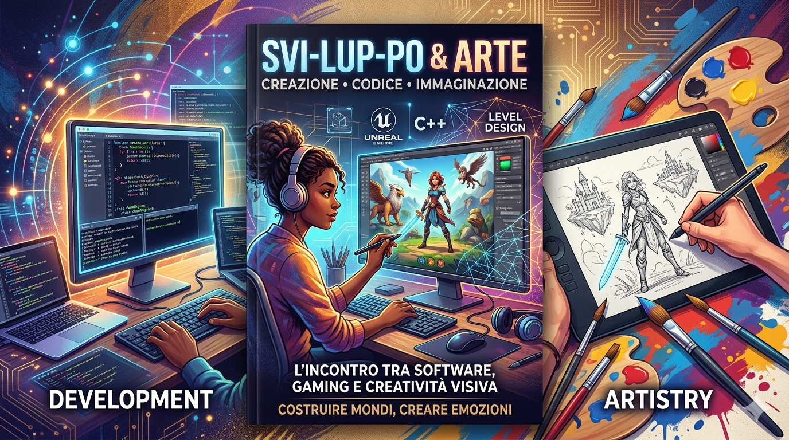

Chi sono...
Credo che il software e l'arte diano il meglio di sé quando sono condivisi. Esploro l'intersezione tra web development e game design con un approccio guidato dalla curiosità e dalla filosofia open source. Non cerco clienti, cerco complici per costruire qualcosa di significativo.
Costruisco interfacce e architetture web che rispettano l'utente. Scrivo codice che chiunque possa leggere, migliorare e riutilizzare. Per me, il web è una tela comune, non un recinto chiuso.
Sperimento con il gioco come forma d'arte interattiva. Mi affascina la logica che dà vita ai mondi virtuali e la sfida di rendere complesse meccaniche accessibili a tutti.
I nostri progetti spaziano dall'arte digitale alla tecnologia interattiva, con un focus sulla sperimentazione e l'innovazione.
Inoltre siamo dediti allo sviluppo di simulatori 3D e intrattenimento videoludico a scopo didattico e sperimentale.
Il futuro ci riserva nuove sfide e opportunità per esplorare ulteriormente l'intersezione tra arte e tecnologia.
L'arte indipendente è libertà di espressione senza filtri. Supporto e contribuisco a progetti che mettono l'originalità e l'etica al centro della produzione creativa.

La filosofia della nuova era
Ogni era porta con sé nuove sfide e opportunità, nel nostro caso la filosofia antica ci porta a sviluppare la convinzione dell' umano in quanto responsabile dello sviluppo della stessa, per il bene del mondo e del sano consumo.